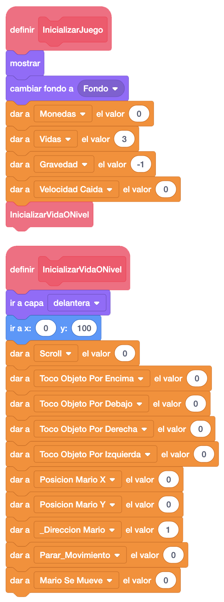

Ahora vamos a ponerle puntos y vidas. Lo primero será crear las variables "Vidas" y "Parar_Movimiento". Iremos al
objeto Mario y las inicializaremos en "Inicializar Juego", vidas a "3" y parar movimiento a "0".
Para ir acumulando puntos, iremos añadiendo a la variable "Monedas" un punto por cada moneda que cojamos y 5
por cada Goomba que aplastemos.
Además, el bloque "Inicializar Juego" lo vamos a dividir en 2, una parte con las variablesa que solo tenemos
que inicializar al empezar el juego y otra con las que tenemos que inicializar cuando nos quitan una vida o
pasamos de nivel, que también llamaremos desde "Inicializar Juego"
A continuación, crearemos el mensaje "Quitar Vidas", donde le restaremos una vida a las que tenemos e inicializaremos a Mario para que vuelva a empezar el nivel. Haremos también un pequeño salto cada vez que nos quiten una vida.
Ahora llamaremos también a este mensaje cuando Mario se caiga del suelo. Para ello, en el bloque "MoverMario"
controlaremos la posición en "Y" que tiene que sobrepasar para considerar que se cae del suelo y si nos
estamos moviendo, parar ese movimiento y llamar al mensaje para quitarle una vida. Esto lo haremos en Mario
en el bloque "MoverMario".
Aprovechamos para añadir también que no se mueva cuando pulsemos la flecha arriba ni la izquierda o derecha,
verificando el valor de la variable "Parar Movimiento", que estará a "0" cuando todo pueda moverse y a "1"
cuando no.
Ahora iremos al Goomba y las llamadas al mensaje "QuitarVidas" las haremos solo cuando estemos en movimiento, parándolo antes de la llamada.
Añadiremos a continuación los objetos con los que visualizaremos las vidas. Priemro el objeto "Mario_x", que colocaremos en la esquina superior derecha, y lo único que haremos con él es que si nos quedan vidas lo mostramos y si no, lo escondemos.
El siguiente objeto a añadir es el "Vidas Mario", que es el contador de visda que le quedan. Haremos lo mismo que el objeto anterior pero en el caso en el que haya que mostrarlo, le pondremos el disfraz correspondiente a las vidas que le quedan.
Para ver los puntos o monedas, vamos a añadir primero el literal de "Mario", que lo colocaremos en la esquina superior izquierda.
Luego añadiremos los números correspondiente a las unidades y las decenas y los colocaremos a la derecha del
literal.
Lo que haremos con ambos será colocarles el disfraz del "0", posicionarlos y buscar las unidades y las decenas
en cada uno de ellos.
Las unidades quedarían así, colocando el disfraz correspondiente a la última posición y escondiéndolo cuando
no tengamos vidas.
Las decenas quedarían de esta forma, colocando el disfraz correspondiente a la penúltima posición y escondiéndolo también cuando no tengamos vidas.
Haremos ahora el game over cuando nos quedemos sin vidas. Para ello, añadiremos un fondo que nos indique que
hemos terminado la partida.
Vamos ahora a Mario y separamos el contenido del bloque "InicializarJuego" donde dejaremos solo las variables
que inicializaremos una sola vez y el resto lo pondremos en un nuevo bloque "InicializarVidaONivel", al que
también llamaremos desde el anterior y que contendrá la inicialización de las variables necesarias para el
cambio de nivel o cuando nos quitan una vida.

Modificaremos modificaremos el mensaje ""Quitar Vidas" para que al final compruebe si le quedan vidas. Si fuera así, llamamos al mensaje "InicializarVidaONivel" para seguir jugando y si no le quedan vidas, enviaremos el mensaje "GameOver" para ocultar o eliminar todos los objetos, cambiaremos el fondo al de fin de la partida y esconderemos a Mario.
Programaremos en el resto de objetos visibles que cuando recibamos el mensaje "Game Over" se esconda o se eliminen los clones.
El juego iría quedando así.
Podemos ver el juego terminado con los puntos y las vidas pulsando aquí.